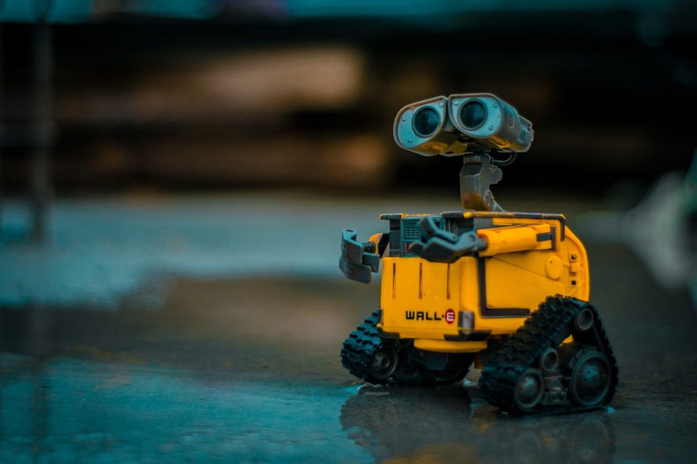

Como ya todos sabéis, en Cataluña, durante los dos años de bachillerato y el último año de ciclos, se debe presentar un proyecto final. A este proyecto se le llama síntesis. Durante todo este tiempo, los estudiantes deben documentar, buscar información y presentar cuáles han sido sus descubrimientos en relación con el trabajo que están haciendo. Bienvenidos a mi web, queridos usuarios de internet. En esta página web os hablaré de mi proyecto de síntesis. Ahora os haré una pequeña introducción de lo que se basa mi trabajo.
Cabe aclarar que es la primera vez que hago un proyecto de robótica. En otras palabras, voy a ciegas con este proyecto por mis pocos conocimientos. Mi proyecto va sobre crear un robot. Os preguntaréis que características tendrá mi robot. La idea general es crear un robot asistente que tendrá sensores de gas, temperatura y de ultrasonidos. Además, tendrá un módulo de reconocimiento de voz que nos dará la opción de poder dar órdenes que el robot deberá ejecutar. Incluyendo a todo lo demás, este asistente tendrá unas ruedas de oruga controladas por dos motores. Lo que se conseguirá con estos motores es dar la movilidad al robot.
El sensor de temperatura nos hará saber sus datos mediante dos LEDs, uno rojo y otro azul. El sensor de gas nos avisará cuando detecte mucha cantidad de Dióxido de carbono mediante un altavoz que tendrá el robot. El sensor de ultrasonidos, en el momento que detecte algún obstáculo, avisará a los motores para que puedan esquivarlo.
